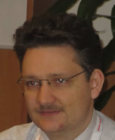

Selected Public Scientific Contributions
2018
2016
- René Haberland, Kirill Krinkin, A Non-repetitive Logic for Verification of Dynamic Memory with Explicit Heap Conjunction and DisjunctionInt.Conf. on Advanced Engineering Computing and Applications in Sciences (ADVCOMP), ISBN: 978-1-61208-506-7, ISSN: 2308-4499, IARIA XPS Press, Ed. University of Venice, Italy, Oct.2016, pp.1-9
- René Haberland, Kirill Krinkin, Sergey Ivanovskiy, Abstract Predicate Entailment over Points-To Heaplets is Syntax Recognition18th Conf. of Open Innovations (FRUCT), ISBN: 978-952-68397-3-8, ISSN: 2305-7254, DOI: 10.1109/FRUCT-ISPIT.2016.7561510, Ed. By T.Tyutina, S. Balandin, A. Levina, 2016, pp.66-74
- René Haberland, A Stricter Heap Separating Points-To Logic3rd Int.Scientific Symposium Sense Enable (SPITSE2016), Ed. by Russia National Research University Moscow, June 2016, pp. 103-104, РИНЦ: 26444969
- Хаберланд, Р., Кринки К.В., Ивановский С.А., Верификация Объектно-ориентированных программ с динамической памяти на основе ссылочной модели. Известия ЛЭТИ, Санкт Петербургский Электротехнический Университет. -№1. - 2016. - Санкт Петербург - С.14-18. ISSN: 2017-8985, УДК: 004.052.2
2015
2014
- René Haberland, Sergey Ivanovskiy, Dynamically Allocated Memory Verification in Object-Oriented Programs using PrologProc. of the 8th Spring/Summer Young Researchers' Colloquium on Software Engineering (SYRCoSE2014), Editors Alexander Kamkin, Alexander Petrenko, Andrey Terekhov, 2014, pp.46-50, ISBN:978-5-91474-020-4, ISSN: 2311-7230, DOI: 10.15514/SYRCOSE-2014-8-7, DOI: 10.1.1.650.1325
- Рене Хаберланд, Верификация корректности динамической памяти с помощью логического языка программирования. / Р. Хаберланд // Конференция EMC² "Технологии Майкрософт в Теории и на Практике Программирования." Серия: Новый подходы к разработке программного обеспечения, С.П. Политехнический Университет. - №3. - 2014. - Санкт Петербург. - С.56-57, УДК: 519.681.3
2009
2008
- René Haberland, Igor L. Bratchikov, Transformation of XML Documents with PrologAdvances in Methods of Information and Communication Technology (AMICT2018). Vol. 10, 2008, pp.99-111, ISBN:975-5-8021-1020-1, УДК: 519.1+681.3, РИНЦ: 26444969, re-indexed by Pure, Scopus, Elsevier B.V. (Russia)/FWD 2009 Helsinki University Proceedings, Finland
- René Haberland, Unification of Template-Expansion and XML-ValidationProc. of Int.Conf. on Control Processes and Stability. Vol.34, Saint Petersburg State University, 2008, pp.389-394, ISBN: 978-5-288-04680-3, ISSN: 2313-7304, РИНЦ/УДК: 517.51:517.9:518.9,ББК:22.1,П84